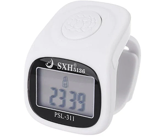

Handheld Control
Simple button access with straightforward, readable feedback.
For those who prefer a handheld rhythm, this collection offers clear counting, easy handling, and a visual language that still fits the TasbeehWala homepage mood.
Simple button access with straightforward, readable feedback.
Compact enough to slip into pockets, pouches, and small prayer kits.
Pairs naturally with mats, accessories, and bead tasbih collections.

Digital tasbihs sit between wearable ease and tactile tradition, so the nearby paths matter.
Digital tasbihs are useful when you want the direct feel of a handheld item with the reassurance of a clear count display. They simplify the act of resuming where you left off and help keep the rhythm grounded.
The collection works best for people who want practical support without moving fully into wearable tech.